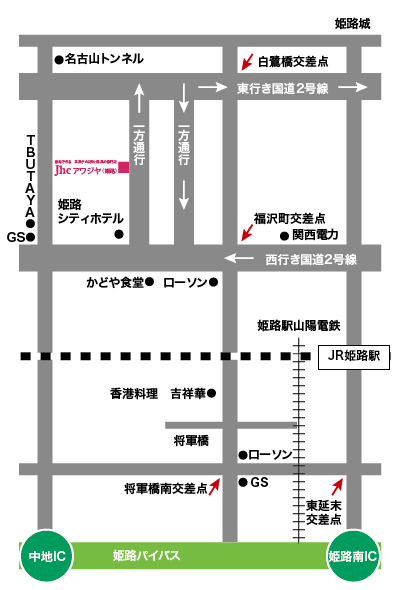

MAP

北方面 東行き2号線からお越しの方へ
- 旧日赤病院下信号を真っすぐ東へ直進します。（国道2号線東行き一方通行）
- 大きな交差点があります（白鷺橋信号）
- 白鷺橋信号を右折して直進します。大きな交差点になっています。（福沢町の信号）
- 福沢町の信号を右折します。（この際、一番右端の車線を走ってください）
- すぐに右手に姫路シティホテル（赤レンガ色のビル）があります。
- 姫路シティホテルを右折して40m程直進してもらうと、左手にあります。
北方面 東行き2号線からお越しの方へ
- 姫路バイパスを姫路南で降ります。姫路駅方面へ直進します。東延末の信号を左折し直進します。
- 山陽電車の高架下をくぐり、 将軍橋南の信号につきます。
- 将軍橋南の信号を右折し、直進すると左手に 香港料理 吉祥華、先にローソンがあります。
- 大きな交差点になっています。（福沢町の信号）
- 福沢町の信号を左折します。（この際、一番右端の車線を走ってください）
- すぐに右手に姫路シティホテル（赤レンガ色のビル）があります。
- 姫路シティホテルを右折して40m程直進してもらうと、左手にあります。
所 在 地：姫路市東雲町1丁目34
TEL. FAX ：079-292-4232
営業時間：AM10：00～PM6：00
定 休 日：日曜日、祝日